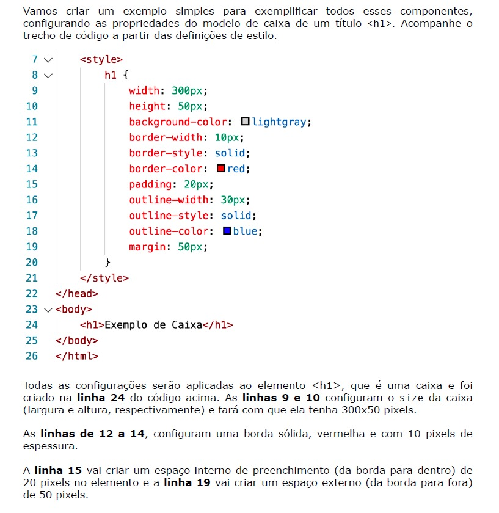
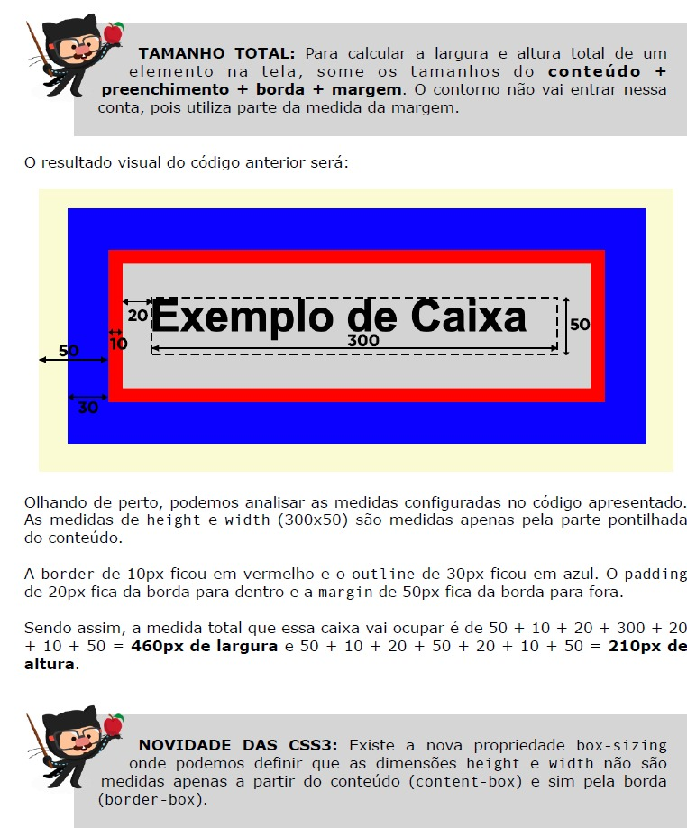
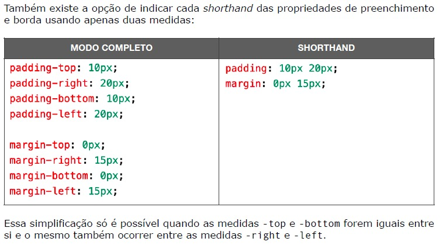
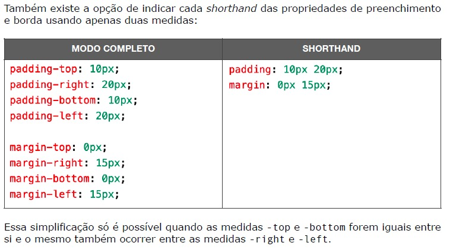
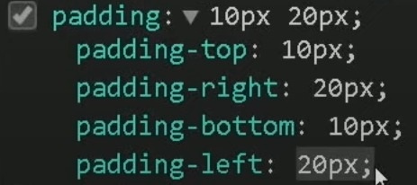

Parágrafos também são exemplos de box-level mas os links são exemplos de caixas INLINE-LEVEL. Vamos ver como tudo isso funciona.
Eis o código para deixar desse jeito acima ↑:
 SHORTHAND:
 

Caso eu queira colocar o H1 como inline, posso usar o style <display:inline;> e ele vai ficar que nem o exemplo da âncora aqui a
. E quando coloca o inline, NÃO SE PODE COLOCAR O WIDTH E NEM O HEIGHT! E POSSO FAZER O CONTRÁRIO COM A ÂNCORA TAMBÉM a
. Colocando ela como um block.
Só colocar o DISPLAY para mudar uma característica padrão de um elemento.
Podemos usar o shorthand para o <border> também para simplificar. Eis o exemplo: ↓
border: 10px solid darkslategray;
SEMPRE seguir a regra para dar certo. E a regra é: border-width > border-style > border-color
.
A mesma coisa posso fazer com o <padding>:
padding: 10px 10px 10px 10px;
ORDEM CERTA do padding: paddin-top > padding-right > padding-bottom > padding-left
MAS, SE COLOCAR SOMENTE "10px" uma só vez, ele vai contar como os 4 (top, right, bottom e left)!!! Exemplo:
padding:10px;
Nós também podemos colocar dois valores. Olhe esse exemplo: ↓
padding:10px 20px;
Ao fazermos isso, o primeiro valor(10px) vai configurar o top e o bottom. O segundo valor, vai configurar o right e o left! Olhe o exemplo a seguir.
Posso fazer a mesma coisa com o <margin>. Eis o exemplo em que uso o shorthand:
margin: 20px 20px 20px 20px;
Ela segue o mesmo padrão do padding(top > right > bottom > left).
Caso eu queira deixar minha BOX-LEVEL centralizada, posso usar essa configuração no margin:
margin: 20px auto 20px auto;
Como você pode ver ai no código, deixei a margen direita e a margen esquerda no auto
que significa que vai deixar o BOX-LEVEL centralizado independentemente do tamanho da tela do cliente/usuário.
O<outline> também tem uma shorthand. Eis aqui o exemplo e a ORDEM:
outline: 10px dotted blue;
ORDEM CERTA do outline: outline-width > outline-style > outline-color
Para saber mais sobre BOX-SHADOW, Clique aqui